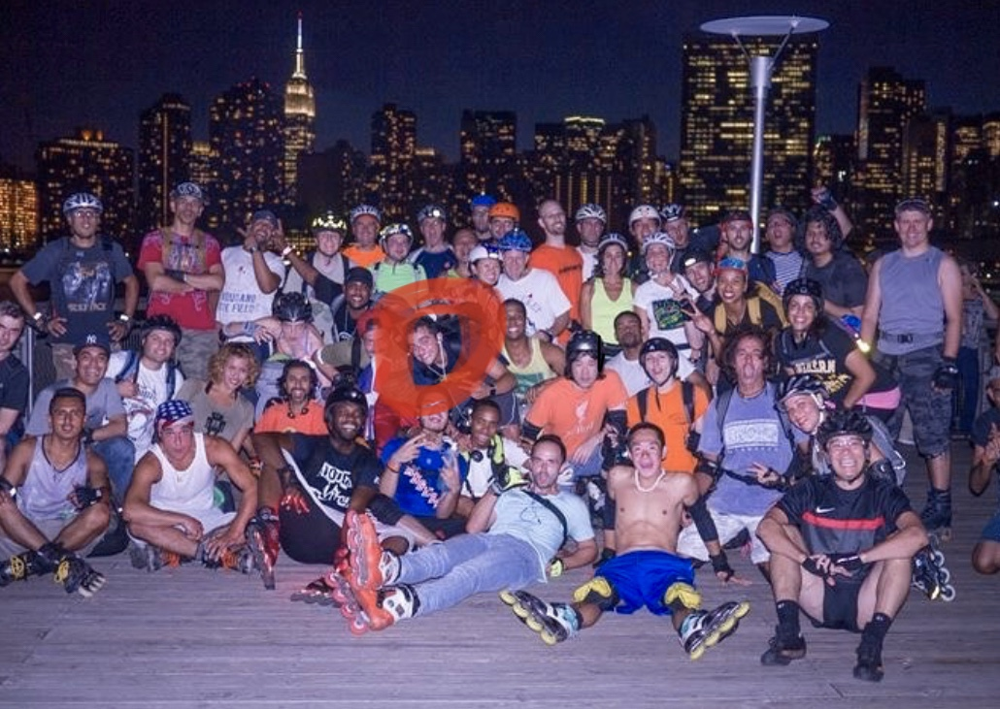

My name is William Moran. I am a 28 year old student veteran living in Queens. This is my second semester at Lehman College. Prior to this I served 5 years in the United States Navy as a Fire Control Technician. That basically means I am a submariner. I traveled much of the world and spent months not feeling the sun on my skin. The sea is a cold abyss that is not kind. I fell in love with the sea during my time in her depths. I enjoyed the company of my crew and was a darn good submarine tracker.

I am embarking on a new journey. Using my skills in the Navy as a technician I am transitioning into a new career field. I am excited to inform you that I am currently taking my first steps into Cyber Security. This field poses plenty of challenges as I learn how computers work and use this knowledge to protect the people of America from those looking to take advantage of us through means of cybersecurity. Taking the CMP 128 class is one of the first major steps into a bright future.
3 perfect Jobs and why.
While searching for potential jobs I am searching for 3 categories.
Cybersecurity analyst is the entry job I intend on aiming for.
Fire Control System Installer for NUWC in Rhode Island.
Being a rockstar.